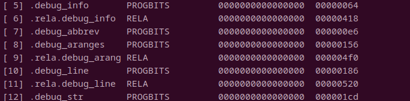

LLVM·ELF和Dwarf
发表于|更新于
这一节来讲一下关于Dwarf的内容，Dwarf是一种调试信息格式，应该也是目前使用最为广泛的一种调试信息格式，不只是c和c++使用，当下比较流行的go和rust也使用dwarf进行调试，所以go和rust也可以用gdb来调试，不过java并不使用gdb也不使用dwarf，以后有机会的话会来说说java如何实现调试的。
在这一节的最后，我们会实现一个类似于objdump -S的工具，将程序源码和汇编代码混合输出，就像下面一样：
Dwarf格式简介
DIE
Dwarf格式本身并不难以理解，有一个不错的介绍[2][3]，在这里，我只能简单介绍一下会用的上的东西，更多的应该去参考SPEC[1]，里面提供了大量的例子。
这里使用的代码的例子如下：
1
2
3
4
5
6
|
int b = 100;
int acfun(int w) {
int c = 20;
return b + c + w;
}
|
使用gcc -g -c acfun.c进行编译，得到acfun.o，用readelf查看后发现多了一些.debug_开头的section，同时多了与此相关的重定位项。
image-20230122115939784
使用objdump --dwarf=info acfun.o对.debug_info进行查看会得到一个非常长的列表，不过实际上它们非常规整容易理解：
1
2
3
4
5
6
7
8
9
10
11
12
13
14
15
16
17
18
19
20
21
22
23
24
25
26
27
28
29
30
31
32
33
34
35
36
37
38
39
40
41
42
43
44
45
46
47
48
49
50
51
52
53
54
55
56
57
| acfun.o： 文件格式 elf64-x86-64
.debug_info 节的内容:
编译单元 @ 偏移 0x0:
长度： 0x7e (32-bit)
版本： 4
缩写偏移量： 0x0
指针大小： 8
<0><b>：缩写编号：1 (DW_TAG_compile_unit)
<c> DW_AT_producer : (indirect string, offset: 0x29): GNU C17 8.3.0 -mtune=generic -march=x86-64 -g
<10> DW_AT_language : 12 (ANSI C99)
<11> DW_AT_name : (indirect string, offset: 0x0): acfun.c
<15> DW_AT_comp_dir : (indirect string, offset: 0xe): /home/aana/Desktop/temp/tt
<19> DW_AT_low_pc : 0x0
<21> DW_AT_high_pc : 0x20
<29> DW_AT_stmt_list : 0x0
<1><2d>：缩写编号：2 (DW_TAG_variable)
<2e> DW_AT_name : b
<30> DW_AT_decl_file : 1
<31> DW_AT_decl_line : 2
<32> DW_AT_decl_column : 5
<33> DW_AT_type : <0x41>
<37> DW_AT_external : 1
<37> DW_AT_location : 9 byte block: 3 0 0 0 0 0 0 0 0 (DW_OP_addr: 0)
<1><41>：缩写编号：3 (DW_TAG_base_type)
<42> DW_AT_byte_size : 4
<43> DW_AT_encoding : 5 (signed)
<44> DW_AT_name : int
<1><48>：缩写编号：4 (DW_TAG_subprogram)
<49> DW_AT_external : 1
<49> DW_AT_name : (indirect string, offset: 0x8): acfun
<4d> DW_AT_decl_file : 1
<4e> DW_AT_decl_line : 3
<4f> DW_AT_decl_column : 5
<50> DW_AT_prototyped : 1
<50> DW_AT_type : <0x41>
<54> DW_AT_low_pc : 0x0
<5c> DW_AT_high_pc : 0x20
<64> DW_AT_frame_base : 1 byte block: 9c (DW_OP_call_frame_cfa)
<66> DW_AT_GNU_all_call_sites: 1
<2><66>：缩写编号：5 (DW_TAG_formal_parameter)
<67> DW_AT_name : w
<69> DW_AT_decl_file : 1
<6a> DW_AT_decl_line : 3
<6b> DW_AT_decl_column : 15
<6c> DW_AT_type : <0x41>
<70> DW_AT_location : 2 byte block: 91 5c (DW_OP_fbreg: -36)
<2><73>：缩写编号：6 (DW_TAG_variable)
<74> DW_AT_name : c
<76> DW_AT_decl_file : 1
<77> DW_AT_decl_line : 4
<78> DW_AT_decl_column : 9
<79> DW_AT_type : <0x41>
<7d> DW_AT_location : 2 byte block: 91 6c (DW_OP_fbreg: -20)
<2><80>：缩写编号：0
<1><81>：缩写编号：0
|
在阅读了[2]之后大致应该能够知道dwarf的数据的所属关系是通过树来进行组织的，每一个数据（Debug Information Entry，DIE）是树中的一个节点，每个DIE都有一个TAG来表示其类型，同时拥有各种属性信息，比如上面的：
1
2
3
4
| <1><41>：缩写编号：3 (DW_TAG_base_type)
<42> DW_AT_byte_size : 4
<43> DW_AT_encoding : 5 (signed)
<44> DW_AT_name : int
|
其TAG为DW_TAG_base_type，表示它用来描述一个基本类型，暂时不用理会缩写编号是什么，后面会来说明。然后在里面，有许多DW_AT_为前缀的属性，AT是attribute的缩写，属性包含了byte_size、encoding、name，也就是长度为4字节，名字叫int，是一个有符号整数。
同时还有<1><41>这种标签，它的意思是这个DIE在树的第一层，其偏移（相对于section起始位置）为0x41。
再来具体看其中的一段：
1
2
3
4
5
6
7
8
9
10
11
12
13
14
15
16
17
18
19
20
21
22
23
24
25
26
27
28
| <1><48>：缩写编号：4 (DW_TAG_subprogram)
<49> DW_AT_external : 1
<49> DW_AT_name : (indirect string, offset: 0x8): acfun
<4d> DW_AT_decl_file : 1
<4e> DW_AT_decl_line : 3
<4f> DW_AT_decl_column : 5
<50> DW_AT_prototyped : 1
<50> DW_AT_type : <0x41>
<54> DW_AT_low_pc : 0x0
<5c> DW_AT_high_pc : 0x20
<64> DW_AT_frame_base : 1 byte block: 9c (DW_OP_call_frame_cfa)
<66> DW_AT_GNU_all_call_sites: 1
<2><66>：缩写编号：5 (DW_TAG_formal_parameter)
<67> DW_AT_name : w
<69> DW_AT_decl_file : 1
<6a> DW_AT_decl_line : 3
<6b> DW_AT_decl_column : 15
<6c> DW_AT_type : <0x41>
<70> DW_AT_location : 2 byte block: 91 5c (DW_OP_fbreg: -36)
<2><73>：缩写编号：6 (DW_TAG_variable)
<74> DW_AT_name : c
<76> DW_AT_decl_file : 1
<77> DW_AT_decl_line : 4
<78> DW_AT_decl_column : 9
<79> DW_AT_type : <0x41>
<7d> DW_AT_location : 2 byte block: 91 6c (DW_OP_fbreg: -20)
<2><80>：缩写编号：0
<1><81>：缩写编号：0
|
最开始的标签是<1><48>最后的标签是<1><81>，其中<1><81>：缩写编号：0，缩写编号: 0可以认为是一个null，用来标识一层的结束，而其中的内容都是<1><48>的子结点。
DW_TAG_subprogram代表一个函数，而DW_TAG_formal_parameter代表形参，DW_TAG_variable则描述了一个local variable。
另外需要注意虽然所属关系组织为树，但是引用关系则为图，比如<6c> DW_AT_type : <0x41>则引用了另外一个DIE，用来描述类型，<0x41>是个偏移，指向<1><41>：缩写编号：3 (DW_TAG_base_type)，这是一个上一层的结点。
除了objdump之外还可以使用llvm-dwarfdump来对dwarf内容进行查看，感觉使用llvm-dwarfdump可能更加好些。
LLVM IR和Debug Info
LLVM IR通过metadata和intrinsic来支持DebugInfo，虽然LLVM并不只是支持dwarf这一种调试信息，但是最主要的还是dwarf，而且metadata本身也是由一个一个结点组成的，这一点和dwarf的数据组织方式非常类似。
LLVM DebugInfoDWARF库
LLVM提供了对dwarf格式进行读取和解析的支持，在llvm/libs/DebugInfo/DWARF。
引用
[1] DWARF5
[2] Introduction to the DWARF Debugging Format
[3] 刘佳伟 - DWARF简介 - 20211028 - PLCT实验室